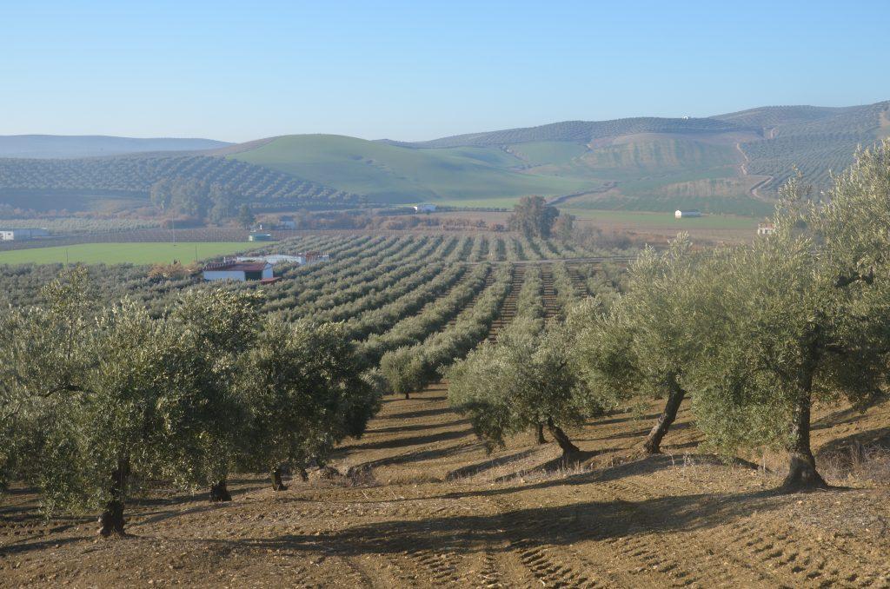

Nuestra Historia
Todo comenzó hace más de un siglo, con mi bisabuelo cultivando los primeros olivos en nuestra finca familiar. Cada generación ha trabajado con amor y dedicación.
Sobre Nosotros
Somos dos hermanos nacidos en Buenos Aires, herederos de una tradición olivarera que llevamos en el corazón. Ofrecemos aceites de oliva virgen extra de calidad excepcional.
